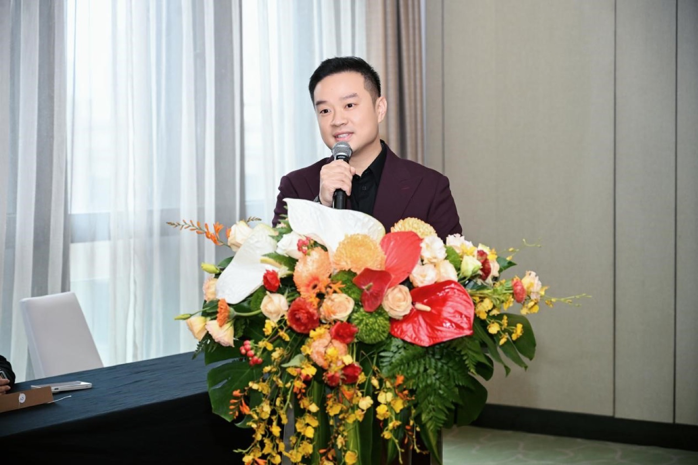

10 月 19 日，重庆渝中，解放碑。绿岩文旅董事长章立尧和万豪国际大中华区奢华品牌地区总经理 Jerry John 在红色签约本上握手，身后背景板写着八个字：华韵匠琢，熠领翡世。
「翡世」两个字，从此是一个酒店品牌的中文名。全称：重庆文珑翡世之选酒店，The Luxury Collection，计划 2027 年开业，396 间房。

01｜改名不是翻译
先把一个误会拆掉：翡世之选不是「豪华精选」的音译，也不是一次本地化包装。它是一次重新定位。
The Luxury Collection 这套英文叙事讲了 120 年，核心词是 collection，收藏。品牌不建标准化的房子，而是把世界各地有来历的酒店收进来，每一家都有自己的名字和故事，品牌负责把它们放进同一张名录。你住的不是「一家豪华精选」，你住的是名录里的某一家。
这套逻辑在英文世界运转良好。但「豪华精选」四个字的中文直译，把 collection 的诗意压成了两个形容词加一个动词，品牌最值钱的部分，每家酒店各不相同这件事，在中文里完全丢失了。
「翡世之选」把重心换了。翡，翡翠，石头里最看工艺的那种；世，世代；选，选材、选匠、选地。三个字连起来讲的不是「我们收藏了很多酒店」，是「我们挑东西的眼光」。叙事从名录换成了器物。
有意思的是对照项。洲际的 Vignette Collection 进中国，中文名叫洲至奢选，做的是同一批存量奢华物业的生意，但策略相反：不改各酒店的牌，只接入会员和分销。一个改自己的名，一个不改别人的名，两条路吃的是不同的业主，赌的是不同的未来。

02｜为什么是重庆
地点的选择比名字更值得琢磨。
过去十年，国际奢华品牌进中国的路径很固定：先北上广，再强二线。这次是万豪奢华矩阵往西部纵深走的一步，落点解放碑民族路。解放碑不是随便选的：它是西部第一个 GDP 和社零双双过千亿的中央商务区，入境游客在重庆的第一站，山城面向世界的门面。
396 间客房及套房，配宴会厅、恒温泳池、水疗和艺术廊，餐饮覆盖南洋、西班牙、高空中餐和高空酒吧。这个配置讲的不是「一家酒店」，是「一个片区的高端接待能力」。业主绿岩文旅要的显然不止客房收入。
2027 年开业。到时候看它是被当作解放碑的会客厅，还是被穿过解放碑的游客当作背景板，答案在运营。
03｜名字里的工艺
酒店的设计内核叫「东方文艺复兴」，从李白游历重庆的行吟诗篇起笔，巫山、巴水、朝云、两江文韵构成空间叙事的骨架。
具体到材料：陶瓷、织锦、蜀绣、琉璃、漆艺。品牌方说，数十位国家级工艺美术大师和顶尖艺术家参与创作。这句话的可信度要等开业才能验证，但方向本身是对的：过去国际品牌进中国，在地化通常止步于大堂挂几幅水墨、客房放一套茶具。把工艺当结构而不是装饰，是另一个量级的事。
「翡世之选」这个名字，某种程度上是给这套工艺预付的定金。名字先承诺了材质感，设计再来兑现。
04｜这是一场关于名字的赌注
把镜头拉远，这件事真正值得记的是节点意义：国际奢华品牌在中国市场的竞争，进入了「翻译之后」的阶段。
第一个阶段拼的是进场，谁能把牌子挂到最好的位置。第二个阶段拼的是规模，谁铺得快。现在进入第三个阶段，拼的是被读懂：你不仅要被中国客人认出来，还要被他们用自己的语言讲出来。一个客人能顺口说出「翡世之选」，品牌才算真正落了地。
代价也直白：中文名一旦启用，就要在所有触点上兑现承诺。翡翠的「翡」字放进了品牌名，客房里的每一件器物都会被拿放大镜看。名与实之间的差距，在这个市场里会被加倍放大。
但赌注的另一半同样清楚。中国奢华客群已经不是十年前那批人，他们对「被翻译过的奢侈」越来越无感，对「为我说的话」越来越敏感。一个 120 年的品牌愿意为他们改名字，这个动作本身就是最大的诚意声明。
2027 年，解放碑见分晓。
一家 120 年的酒店品牌改中文名，你觉得「翡世之选」立得住吗？还是说，你更想叫它豪华精选？
curiohood · Stay Curious
事实核对：签约时间 2026 年 10 月 19 日、项目全称重庆文珑翡世之选酒店、396 间客房及套房、2027 年开业目标、解放碑民族路选址、品牌创立 120 周年、「中国大陆首个以全新中文名称全新规划打造的项目」表述，据绿岩文旅与万豪国际新闻稿及中国日报网、渝中区政府官网报道；设计线索「东方文艺复兴」与工艺美术门类（陶瓷、织锦、蜀绣、琉璃、漆艺），据渝中区政府官网发布；洲至奢选（Vignette Collection）大中华区六地扩张及香港夏利酒店加入，据洲际酒店集团 2026 年 10 月 15 日发布。签约照片来源：中国日报网。